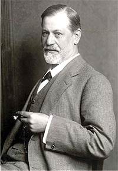
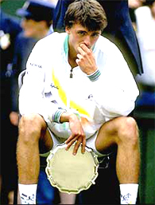
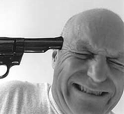

Previous: Crushing the Breaker | 🏠 Mental Game Home | Next: Does the Zone Exist?
Defense Mechanisms
Comprehensive unified tennis knowledge base — Fundamentals, Stroke Analysis, Reference Library, and more
Defense Mechanisms
By Allen Fox, Ph.D.

According to Freud, defense mechanisms are useful in normal situations.
Sigmund Freud pointed out that defense mechanisms, such as the excuses described in the last article (Click Here), are normal and often serve useful and protective purposes. Unfortunately, competitive tennis is not a normal situation, and the useful purposes they provide do not include winning matches or engendering respect from opponents or bystanders. Successful players resist making excuses by consciously recognizing the real issues on court and using the rational parts of their brains to keep themselves on track.
The urge to escape is powerful. Defense mechanisms and urges to escape have extraordinary power. Consider, for example, the Wimbledon final in 1994, when Pete Sampras beat Goran Ivanisevic 7-6, 7-6, 6-0.
Here Ivanisevic became discouraged when he lost the first two sets (even though he had never lost his serve), and simply handed the final set to Sampras. When you look at the overall situation logically such a decision is almost incomprehensible.
Winning the match would be worth millions of dollars - he would get several hundreds of thousands immediately in additional prize money and immense amounts more in product endorsements and appearance fees. But far more importantly, the Wimbledon Championship itself is the fulfillment of every tennis player's dreams. And he only needed to win three sets to take the title, which is what he had to do anyway when the match began.
With his serve and no breaks in two sets, Ivanisevic could have been optimistic.
In fact, he had a far better chance of winning the tournament down two sets to Sampras in the final, than he had when the tournament began two weeks and six matches earlier. If this wasn't a good enough for him, he needn't have entered in the first place. With his serving effectiveness, who was to say that the final three sets couldn't go his way?
Obviously something extraordinarily powerful was clouding his logic system, since deciding to throw away his golden opportunity was so clearly against his interests. But Ivanisevic was operating on emotion. He had had a terrifically stressful first two sets; he had been through two grindingly stressful weeks of tournament play; he was mentally tired, and the match seemed to be going against him.
He subconsciously wanted out from further stress, particularly since he sensed an unhappy ending to the process. His way out was to conclude that further efforts were useless. As crazy as this conclusion appears to an unemotional outsider, to Ivanisevic at that moment it seemed completely reasonable, so distorted was his logic system under the influence of subconscious escapism.

Powerful emotions clouded Goran's logic systems in his 1994 Wimby final.
Logic and Emotion
Logic and emotions don't mix. Coaches pull their hair out trying to convince their players to remain focused, rational, and motivated when they are losing. Standing unemotionally on the sidelines, it is obvious that the alternative is certain disaster. And after the heat of battle has dissipated and over a cold Gatorade in the clubhouse, even the players will agree that losing their heads is not the best way to win tennis matches. But what leaves coaches perplexed is that after agreeing in the clubhouse on the obvious benefits of remaining cool and motivated, the players will go out on court and do the same thing again!
This is because the emotions are extremely powerful, and, like oil and water, logic and emotion don't mix. (At least they don't mix immediately or quickly.) The coach and player can usually agree when they are both in the logic mode, but the on-court competitive situation is different.
It is emotionally driven, and in the throes of strong emotion, logic is usually the first casualty. Unfortunately, outside of a college team situation or a parent-child relationship, logic is the main weapon the coach or anyone else has. (On college tennis teams the coaches control the players' scholarships or positions in the lineup so they can coerce, as can parents.)
In the throes of strong emotion, logic is usually the casualty.
How then do effective coaches (or sports psychologists) handle these issues without force? The general approach is two-pronged. One is to reduce the stress as much as possible while simultaneously working with the players' logic systems to convince them to overpower counterproductive emotions. Of course there are numerous helpful techniques and specific exercises, and we will discuss them later, but the crucial hurdle is player motivation.
Emotional control requires motivation more than it requires information. Under the stress of a match, players need to be extraordinarily motivated to keep their normal urges to escape under control. These emotions are extremely compelling and will get out of hand in an instant if the players are not on top of them.
And it is not a matter of simply giving players information they don't have. Not only is the information simple and obvious, they've heard it countless times from coaches, parents, magazine articles, books, and television commentators. They couldn't avoid it if they tried.
The problem is getting them to do something about it. This is ultimately a matter of convincing players to decide, at sufficiently deep levels, to stay practical, keep their goals in mind, and forego counterproductive emotional responses - difficult because their emotions are so natural and insistent.
Escapist defense mechanisms are always ready to pounce.
Giving up these escapist defenses requires constant conscious vigilance because the urges are always there, just below the surface, and ready to pounce. If the players lose confidence, get mentally tired, or become more stressed than usual they are likely to lose discipline, and out will pop the defenses.
They often think they get it, but they don't. Coaches wonder why players, who seem to 'get it' for periods of time, so frequently relapse and revert to old counterproductive emotional habits. They do so because even though they understand the situation logically, they haven't absorbed it deeply enough.
Their commitment to controlling errant emotions is shallow, so they continue to succumb. They are really cured only when the light bulb in their head goes off and they irrevocably decide that they are simply not going to behave counterproductively any more, regardless of anything that may happen on court. That's when they really 'get it'. But players rarely have sufficient motivation to 'get it' immediately.
How do I know the problem is motivation? Consider the following thought experiment. What would happen if I were to go out on court with a gun and tell the player that I will instantly shoot him in the head if he becomes angry, makes excuses, or stops trying during the match?

Are escapist emotions worth dying for?
Do you believe he would do any of these things? He would be more afraid of me than losing. And as long as I am standing there waving my gun around, I would bet he will keep control of himself.
His quick calculation would be that escapist emotions are not worth dying for. This tells me that players continue to lose emotional control simply because they don't want to change and control themselves badly enough. When they do, they will change - and change immediately.
The basic issue never goes away. No matter how well players initially respond to the ministrations of a good coach, sports psychologist or even their own budding awareness, they must not forget that outcomes will forever remain uncontrollable, hence escapist urges will always be there.
Just because they control themselves for awhile, they mustn't assume the underlying problem has been solved. It hasn't. Escapist tendencies have only been temporarily repressed. If players mentally weaken, out they will come again. Like alcoholics on the wagon, players must remain constantly vigilant lest backsliding occur.
Giving in to emotions is like dieting: the first bite leads to more.
I have noted a common sequence as players struggle for control of errant emotions. When they start, particularly under the influence of a good coach or sports psychologist, they usually improve immediately.
This is because almost anything is better than simply letting nature take its course. They are pleased and even begin to hope that the old emotional problems are well and safely behind them. But inevitably they take new losses, and the old doubts resurface.
This erodes their embryonic resolve, and dormant escapist emotions again run rampant, leading, of course, to more losses and further dissipation of resolve. Match results roller-coaster in concert with emotions, and they may go through slumps severe enough to make them doubt the emotional control process entirely.
For a time, they will often resist reasserting emotional discipline and just let themselves go. This is akin to the overweight person who successfully diets for awhile but finally slips and begins to regain weight. Dieting has required the constant effort of self-denial. Once discipline slips and the dieter starts to indulge - just a bit at first - and the lost weight starts to return, it becomes doubly difficult to diet again since much of the hopeful initial motivation has dissipated.
In like manner, tennis players, after the opening rush and early improvement, will usually relapse. They may not have the stomach to immediately climb back on the wagon, but rather insist on banging their heads against the wall for awhile. For the lucky few the obvious lessons sink in quickly. For the others it requires more time and punishment than seems reasonable, but most players do eventually 'get it'. And in future articles, we will endeavor to help players 'get it' sooner.
This article is excerpted from Allen's new book, Tennis: Winning the Mental Match, which will be available at the end of 2010 on Amazon and on Allen's new website, www.allenfoxtennis.net.
Read More From Allen!
Visit him at www.allenfoxtennis.net

Winning the Mental Match Dr. Allen Fox
Tennis is mentally the most difficult sport due to it’s personal nature which makes winning and losing feel more important than they are. In this new book, Allen offers his proven solutions to problems such as choking, reducing stress, finishing matches, and developing confidence. Based on a life time of high level play and coaching success, it’s a must for all competitive players.
Click Here to Order.

Winning may not be everything, but Dr. Allen Fox points out that, if we are honest with ourselves, winning is still eminently preferable to losing. In his new book, The Winner's Mind, Allen lays out an original step-by-step plan for succeeding at any of life's endeavors, based on his first hand and very personal observations of the careers of both world-class tennis players and successful businessman.
The bottom line is that even if you are not a born champion--and only a tiny percentage of us are--you can still use the success strategies of champions to tilt the odds in your favor. Writing with brutal honesty and dry humor, Fox lays out the common mental characteristics of winners in sports and in life. He explains the critical role of intellect over emotion. He analyzes the struggle between ambition and fear and the insidious and pervasive fear of failure that undermines so many of us.
He then outline how to confront and overcome these fears in your life and career, even when they are initially subconscious. Must reading from one of the great thinkers in tennis, and a Renaissance Man in life. Click Here to Order.
To purchase this book you can also send a check for $17.95 to Allen Fox, 1120 Inverness Place, San Luis Obispo, CA. 93401. The price includes shipping.

Allen Fox PhD is a former world class player, a coach, a psychologist, and one of the most original and insightful analysts in modern tennis. A top 10 American player from the glory days before Open tennis, Fox played many of the legendary greats, among them Roy Emerson, Rod Laver, Stan Smith, and Arthur Ashe. At Pepperdine he developed the men's tennis program into an elite contender for national titles, and gave Brad Gilbert the insights that became the foundation for "Winning Ugly". His book Think to Win is a modern classic. He has also starred in a series of acclaimed videos, including Pro Secrets of Match Play and Allen Fox's Ultimate Tennis Lesson.
Source: tennisplayer.net archive — Defense Mechanisms.docx (John Yandell teaching library, 2002-2022). Extracted and rendered as HTML for Tennis Future Lab.